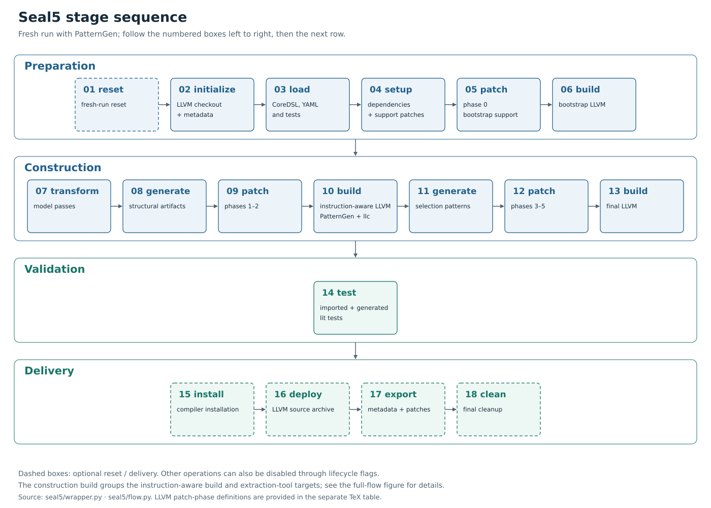
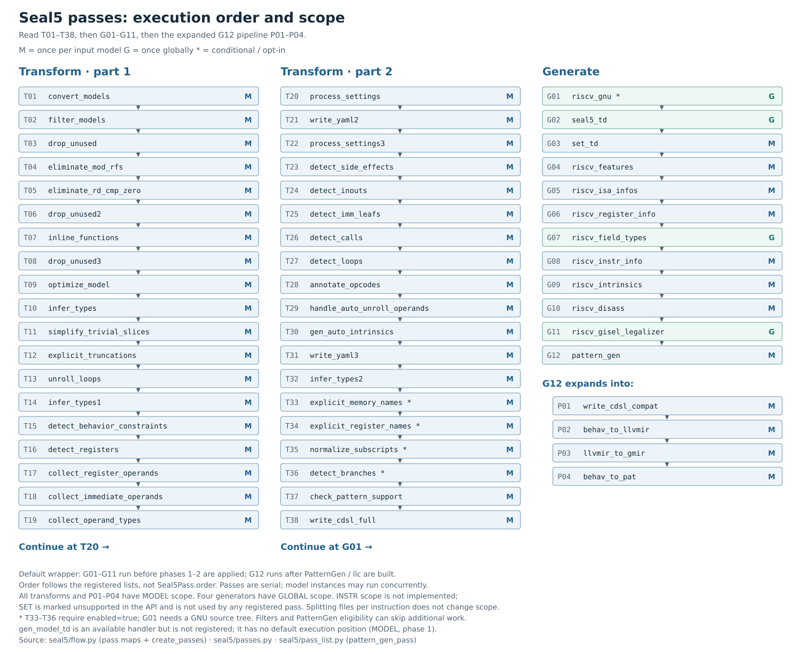
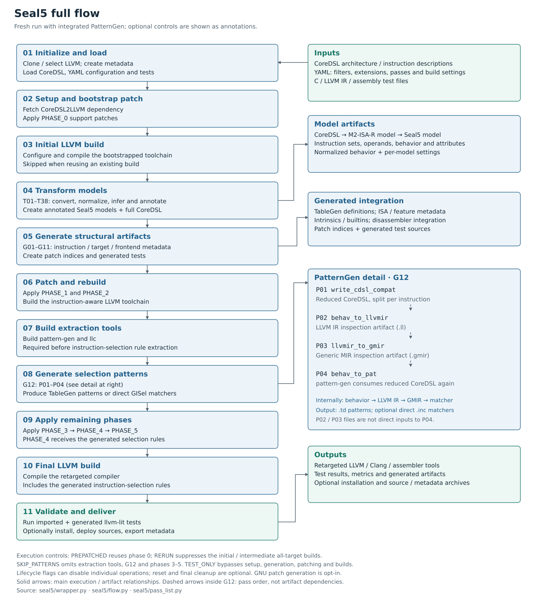

Seal5 architecture diagrams
These figures describe the registered passes and wrapper flow in this source checkout. Vector PDFs are suitable for a dissertation; SVGs remain editable. The pass inventory is best placed on a landscape page or in an appendix.
Stage sequence


Sequential stages for a fresh run with PatternGen, grouped by lifecycle role.
LLVM patch phases
The patch phases are provided as a separate TeX table with an independently
compiled PDF preview. The table lists default assignments for phases zero
through five; these phase numbers are distinct from the lifecycle steps above.
Load booktabs and tabularx and include the TeX file with \input.
Pass order and scope


Registered pass order and scope. M denotes per-model execution; G denotes global execution. The final generation pass expands into four nested passes.
Full compiler-generation flow


Fresh-run flow with integrated PatternGen. The inset distinguishes pass order from artifact dependencies during pattern extraction.
Reproduction and source provenance
Figure notes, captions and LaTeX examples
include execution controls, inactive handlers, and regeneration instructions.
The generator reads the pass registration
lists from Python syntax trees without importing Seal5 or running any builds.
The source manifest records fingerprints
of the implementation files used for these figures.